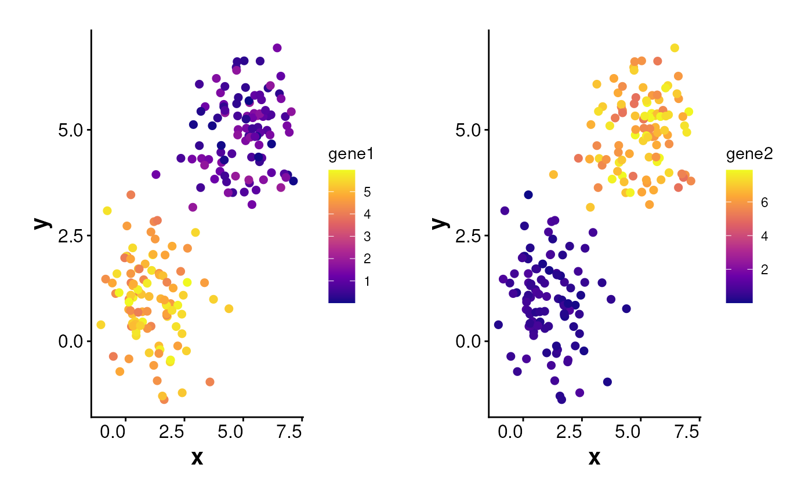
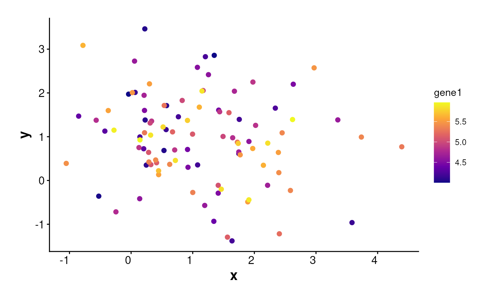

Visualizes expression of selected genes on a spatial plot using
cell coordinates and expression matrix.
Can display expression for all cells or a subset
(e.g., by cluster or manually specified cells).
Also supports splitting the plot using metadata columns (e.g., cluster)
and returning either a combined plot or a list of individual ggplot objects.
Usage
PlotExpression(
data = NULL,
exp_mat = NULL,
genes = NULL,
sub_plot = FALSE,
cluster_col = NULL,
one_cluster = NULL,
sub_cells = NULL,
split_by = NULL,
ncol = NULL,
return_list = FALSE,
point_size = 0.2,
angle_x_label = 0,
shuffle = FALSE,
theme_ggplot = my_theme_ggplot()
)Arguments
- data
A
Seuratobject, aSpatialExperimentobject, or a data frame containing spatial coordinates.- exp_mat
A numeric gene expression matrix with genes as rows and cells as columns. Must be of class
matrixordgCMatrix.If
datais aSeuratobject,exp_matcan be omitted and will be automatically extracted usingSeurat::GetAssayData()from the active assay.If
datais aSpatialExperimentobject,exp_matcan be omitted and will be automatically extracted fromSingleCellExperiment::logcounts().The column names of
exp_matmust match the cell identifiers used in downstream analyses.- genes
Character vector specifying gene names to be plotted. Must match row names in
exp_mat.- sub_plot
Logical. If
TRUE, only a subset of cells is plotted (based onone_clusterorsub_cells). Default isFALSE.- cluster_col
Character scalar specifying the metadata column name containing cluster assignments. If
NULL, a default is used depending on the input object type:"seurat_clusters"forSeuratobjects"cluster"forSpatialExperimentobjects
- one_cluster
Optional. Cluster ID to subset cells if
sub_plot = TRUE.- sub_cells
Optional. Vector of cell IDs to include in the plot if
sub_plot = TRUE. If bothone_clusterandsub_cellsare provided, the intersection is used.- split_by
Optional. Column name in the metadata (from
data) to facet the plots (e.g., bycluster).- ncol
Number of columns in the faceted plot when
split_byis used. Passed toggplot2::facet_wrap(). Default isNULL, which lets ggplot2 determine layout automatically.- return_list
Logical. If
TRUE, returns a named list of individual ggplot objects per gene. IfFALSE(default), plots are wrapped into a single patchwork layout.- point_size
Numeric. Size of plotted points. Default is
0.2.- angle_x_label
Numeric angle (in degrees) to rotate the x-axis labels. Useful for improving label readability in faceted or dense plots. Default is 0 (no rotation).
- shuffle
Logical. If
TRUE, shuffles cell order before plotting. Otherwise, cells with higher expression are plotted on top. Default isFALSE.- theme_ggplot
A ggplot2 theme object. Default is
my_theme_ggplot().
Examples
df <- data.frame(
x = c(rnorm(100, 1), rnorm(100, 5)),
y = c(rnorm(100, 1), rnorm(100, 5)),
cell = 1:200,
cluster = rep(1:2, each = 100)
)
exp_mat <- data.frame(
gene1 = c(runif(100, 4, 6), runif(100, 0, 2)),
gene2 = c(runif(100, 0, 1), runif(100, 5, 8))
)
exp_mat <- t(exp_mat)
colnames(exp_mat) <- df$cell
# set a random seed when shuffle is TRUE to reproduce the plot
set.seed(123)
PlotExpression(
data = df, exp_mat = exp_mat, shuffle = TRUE,
genes = c("gene1", "gene2"), point_size = 2
)

PlotExpression(
data = df, exp_mat = exp_mat,
genes = "gene1", sub_plot = TRUE,
one_cluster = 1, point_size = 2
)
